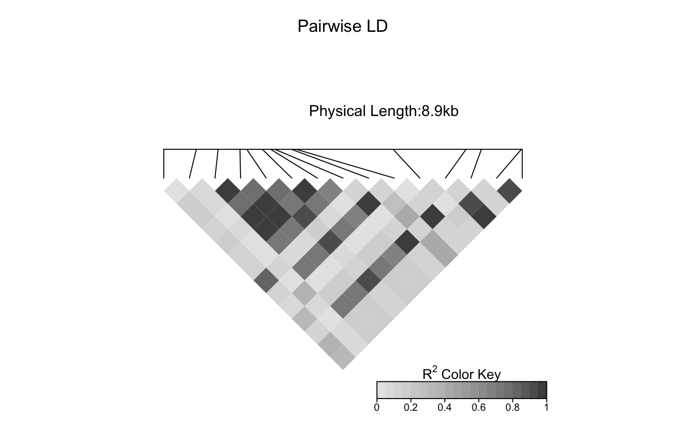
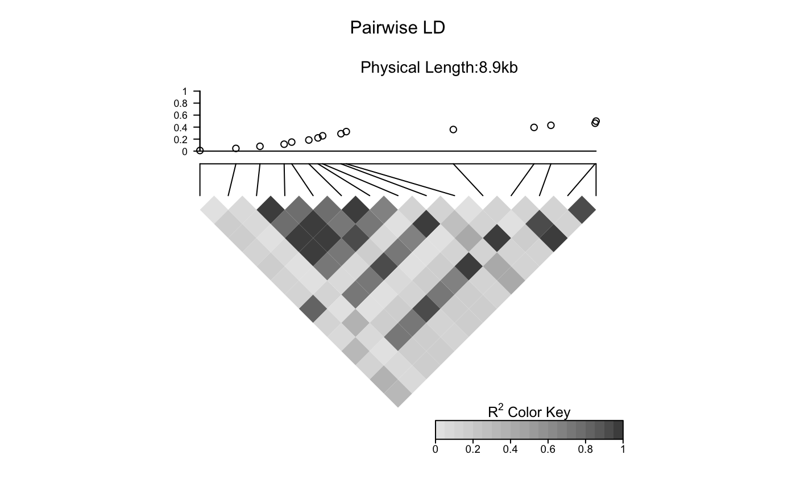

LDheatmap.addScatterplot.RdAdd a scatter plot to an LDheatmap object. The x axis is the map of genetic distances of the SNPs.
LDheatmap.addScatterplot(LDheatmap, P, height = 0.2, ylab = NULL, ylim=NULL, type = "points")
| LDheatmap | An object of class LDheatmap. |
|---|---|
| P | A vector with the values to be plotted as the y axis. |
| height | The height of the plot. |
| ylab | The y axis label. |
| ylim | The y axis limits. |
| type | Plot type. Possible values are |
An object of class LDheatmap given as an argument, with the grob
LDheatmapGrob modified to inclue the "association" child grob.
The function creates an "association" grob and adds it to the LDheatmap object.
Then it pushes a viewport and draws the LDheatmapGrob onto it.
# Load the package's data set data("CEUData") # Produce an LDheatmap object MyLDheatmap <- LDheatmap(CEUSNP, genetic.distances = CEUDist, flip = TRUE)# Generate an arbitrary vector of values to plot Yvalues <- seq(length = length(MyLDheatmap$genetic.distances), from = 0.01, to = 0.5) # Add scatter plot assoc <- LDheatmap.addScatterplot(MyLDheatmap, Yvalues)